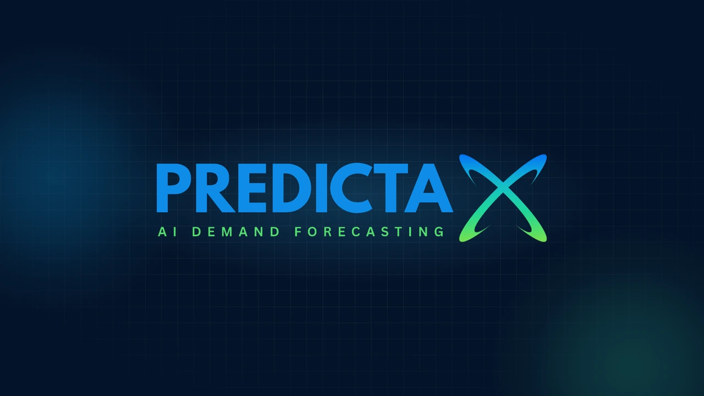
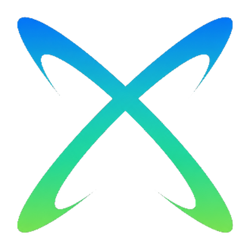
PredictaX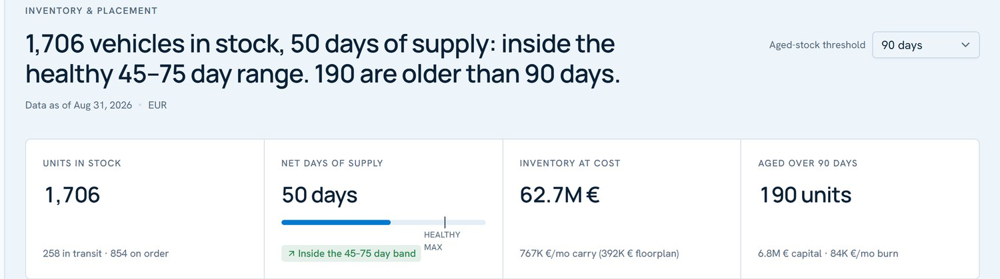
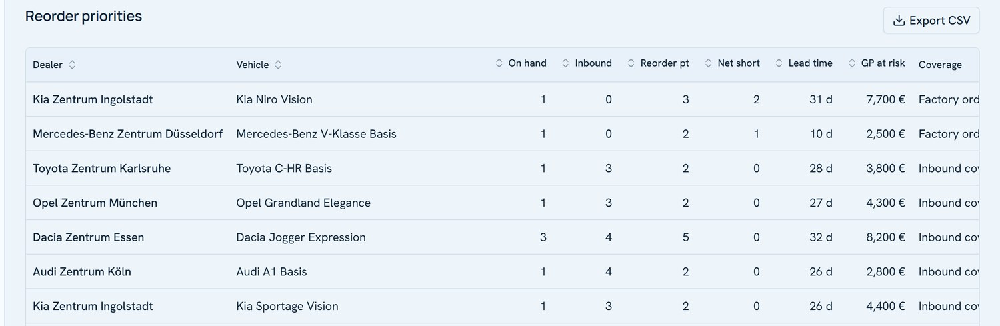
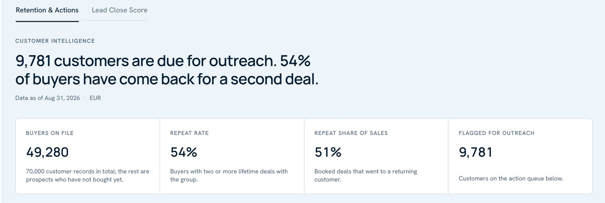
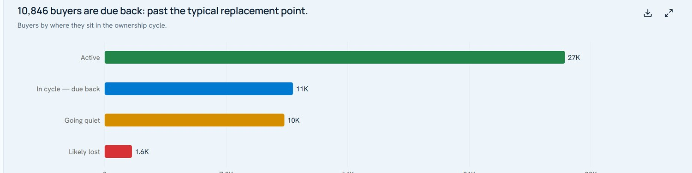
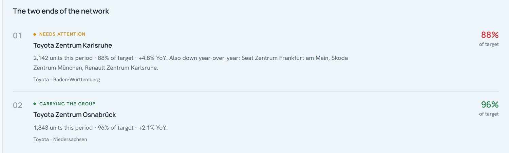
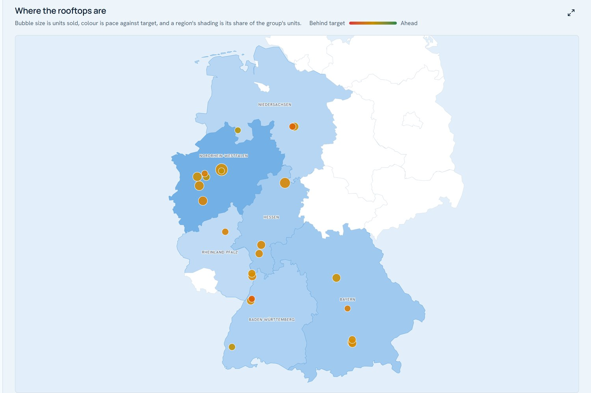
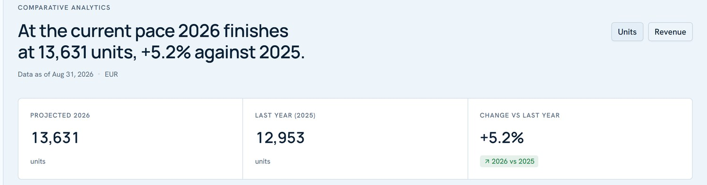
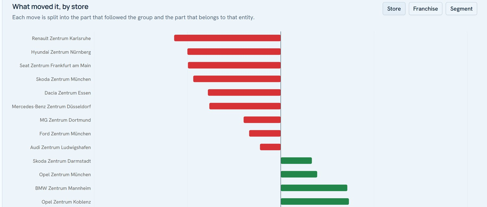
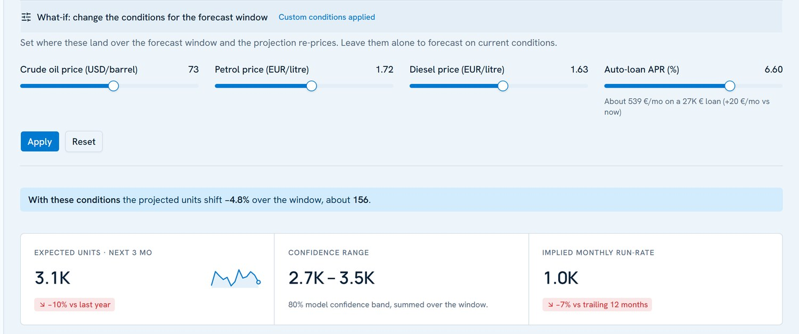
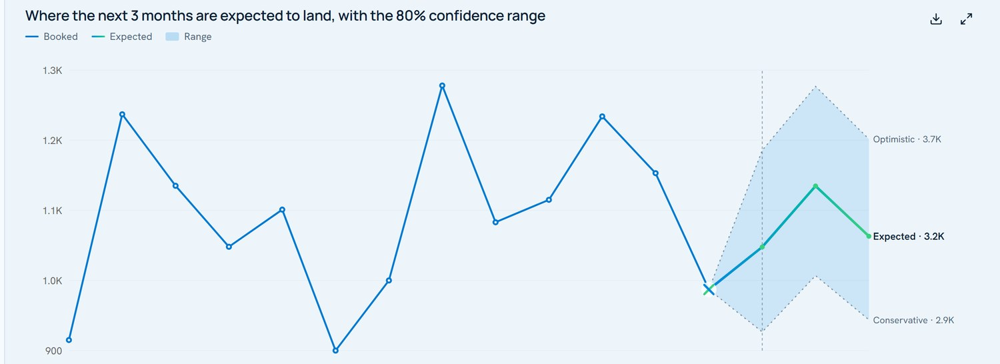
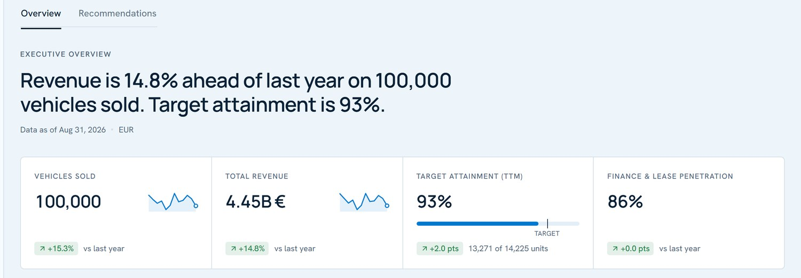
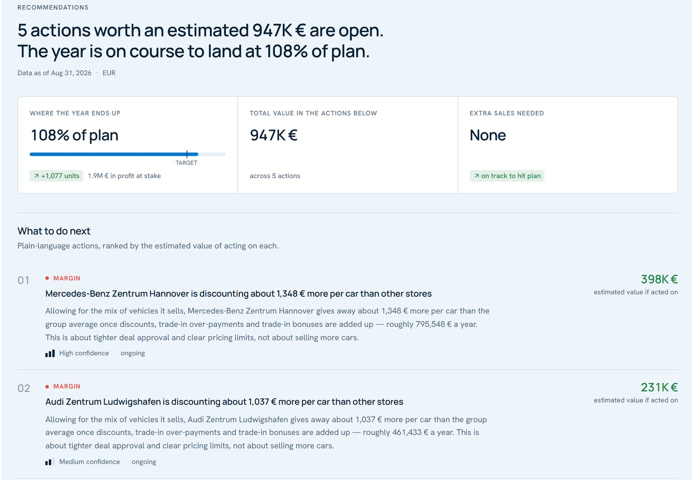
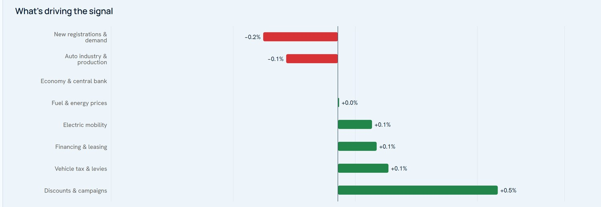
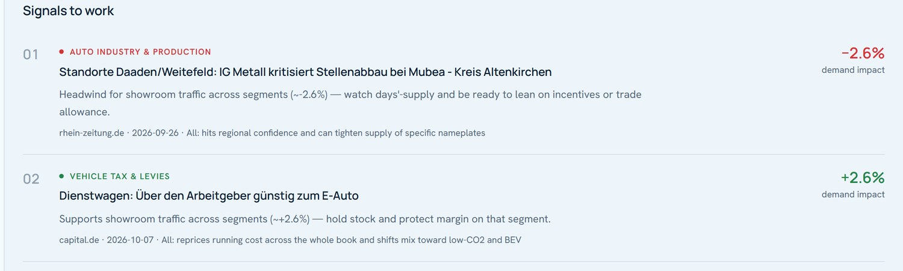
Sales, customers, inventory and vehicle CSVs. Columns matched on import.
Forecasting, segmentation and scoring. Models are signed artifacts.
Postgres with row-level security: each account sees only its own rows.
FastAPI shell. It reaches the backend only through one services layer.
Next.js. One sign-in; the account decides customer or operator. EN / DE.
| The five decisions | PredictaX | vAuto ProvisionCox Automotive | automotiveMastermindDealer-group solutions |
|---|---|---|---|
| 1What to stock | Stock vs forecast demand, reorder priorities, aged-stock actions | Stocking, appraisal, pricing; group transfers | Listed under dealer-group solutions |
| 2Which customers to call | Retention queue: due back, going quiet, likely lost | Not published | Behavior score 0–100, retention campaigns |
| 3Which stores need help | Store performance and what moved each store, year on year | Group and store inventory reporting | Performance benchmarking |
| 4How to plan the quarter | Demand forecast with an 80% range | Not published | "Forecasting and budgeting" listed |
| ↳…and if conditions change | What-if levers: fuel, oil, loan rate | Not published | Not published |
| 5How to read the market | News and sentiment turned into a demand signal | Not published | Not published |
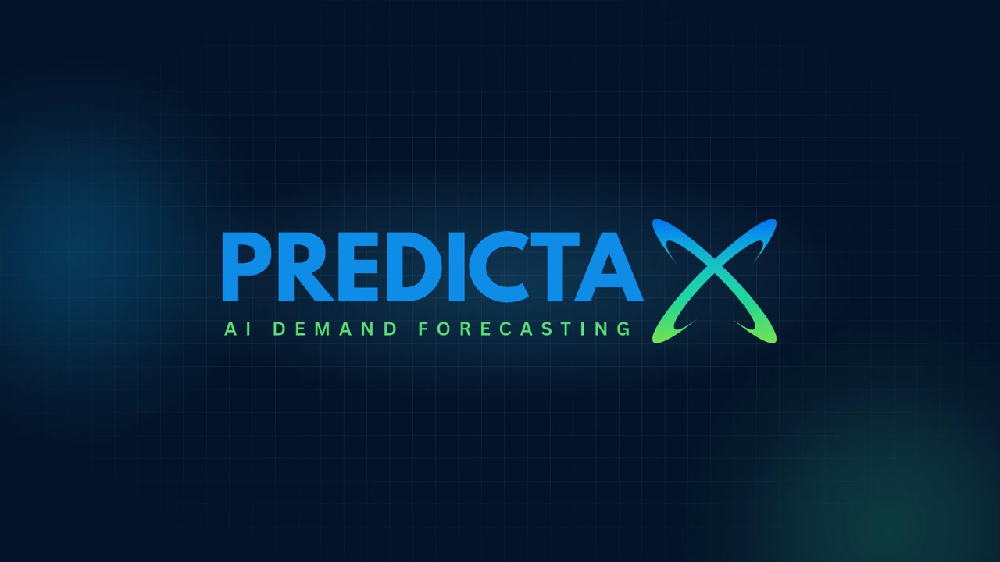
| → Space Enter | Next slide |
| ← Backspace | Previous slide |
| Home / End | First / last slide |
| F | Fullscreen |
| P | Open presenter view (notes, timer, next slide) in a second window |
| G | Jump to any slide |
| L | Open the live app (set LIVE_URL in this file) |
| B | Fallback clip from the trailer for the current tab |
| Space (trailer slide) | Play / pause the trailer |
| M | Mute / unmute the trailer |
| T | Light / dark theme (product slides) |
| N | Notes overlay on this screen |
| Esc | Close any panel |